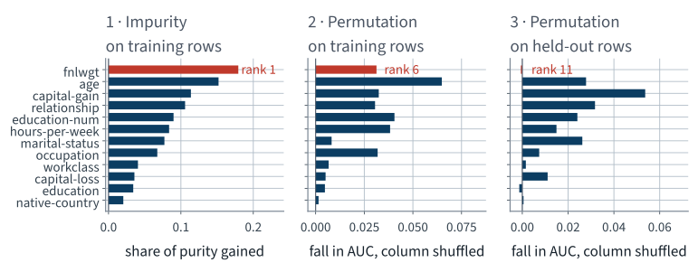
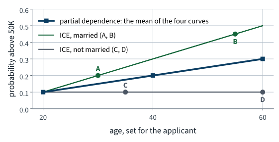
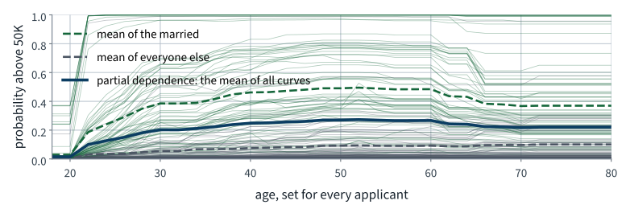
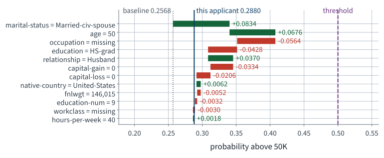
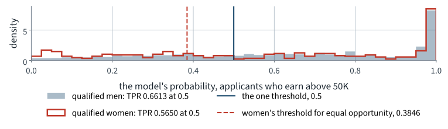
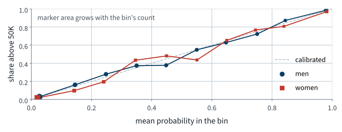

Applications of Machine Learning
BSc Mathematics of Artificial Intelligence · Third year
Where we are
Lecture
What it built
The question it answered
3
honest evaluation; precision, recall, a chosen threshold
how good is the model, on rows it never saw?
4
logistic regression; calibration
is a probability of 0.7 right seven times in ten?
5
trees, forests, boosting
which model, and how stable is it?
7–8
networks, and the loop that trains them
how is a model with many parameters fitted?
10
explanations and audits
what does it rely on, and for whom does it fail?
Outside the book
This lecture is taught from its notes rather than from Géron, and is
examined on the same terms as every other. The notes are the primary
source; the deck is the lecture.
Today
Why look inside a model: debugging, trust, the law
The task: a bank’s instant pre-approval, and the model behind it
The method, globally — permutation importance
against the library’s impurity importance; partial dependence and
ICE curves
The mathematics — the Shapley value of one
prediction, computed exactly
The audit — metrics per slice, three fairness
criteria and why they conflict, proxies, a threshold per group
Design exercise — a digital bank’s
credit-limit model, audited before it is filed as a high-risk system,
in nine steps
the score is high for a reason you would reject: an identifier, a column filled in after the outcome, a quirk of how the data were collected — a shortcut that holds in the test set and not in the world
Trust
the people who act on the model — an underwriter, a recruiter — cannot tell when to overrule it
The law
the EU AI Act classes credit scoring and recruitment as high-risk: data examined for bias, documentation, logging, human oversight, monitoring after release. Under the GDPR a person refused by an automated decision can ask for a human and for meaningful information about the logic
Fairness
an accuracy is an average over everyone, and the people it fails can all be in one group
None of the four is answered by the test score. All of
them are answered by measurements on the fitted model.
Two questions, and the tools for each
Question
About
Tool
What does the model rely on?
the whole model — global
permutation importance; partial dependence
one prediction — local
ICE curves; Shapley values
For whom does it fail?
groups of people
metrics per slice; fairness criteria; proxies
What an explanation is not
Every tool today describes the model: what its output does when
an input changes. None of them says what would happen to a person’s
income if their answer changed. An explanation is a fact about a
function, not about the world.
The setting: instant pre-approval at a bank
A bank’s premium card needs an income above a band.
Applicants answer a dozen questions in the app. A model estimates the
probability that their income is above the band:
0.5 or above — pre-approved on the spot
below — sent to a manual check of payslips,
slower; many applicants give up on it
Error
Who pays
a qualified applicant sent to the slow path
the applicant, and the bank in lost customers
an unqualified applicant pre-approved
the bank, when the documents arrive
The product team removed sex and
race from the model’s inputs, reasoning that a model which
never sees an attribute cannot use it. Today tests that reasoning.
The data, and what is kept aside
Adult census income
Value
People
48,842
Answers the model sees (categorical)
12 (6)
Fit / validation / test rows
29,304 / 9,769 / 9,769
Share of women
0.3315
Above 50K: everyone / men / women
0.2393 / 0.3038 / 0.1093
Age, work class, education twice (as a level and as
years), marital status, occupation, relationship in the household,
capital gains and losses, hours, country — and
fnlwgt, the census’s sampling weight.
sex and race stay beside
every row, for the audit only.
A stand-in
The 1994 US census extract every fairness method has been tried on. The
bank is a frame: the method transfers, the numbers do not.
Histogram boosting, the model a practitioner fits on a table
of mixed columns; the six categorical answers declared as categories, so a
code is never read as a size. A good model. The rest of the lecture is about
what it does.
Which columns does the model rely on? Two ways to ask
Impurity importance — trees only
A tree grows by splits. Each split sends a node’s
rows left or right so that each side is purer: closer to
all above 50K, or all below. Credit every split’s gain in purity to
the column it split on, weighted by the rows it split; add up over all the
trees; scale so the columns sum to 1.
It asks: how much did the trees use this
column to fit their rows?
Permutation importance — any model
Score the model on a set of rows. Then
shuffle one column, so that every person gets someone
else’s value, and score it again. The fall in AUC is the
column’s importance: large if the predictions depend on it, zero if
the model ignores it.
It asks: how much do the predictions depend on
this column?
Training rows · AUC 1.0000
The rows the 200 trees were grown on. The forest gets every one right:
it has memorised them. Importance here says what the forest needs to
reproduce rows it has memorised.
Held-out rows · AUC 0.9046
Rows the forest never saw. Importance here says what helps it predict
people it has not seen — the bank’s question.
Impurity exists only on the training rows: it is a
by-product of growing the trees. Permutation runs on either. The boosted
model has no feature_importances_, so the comparison runs on a
forest.
The column to watch: fnlwgt
What it is
The final weight: the Census Bureau’s estimate of how many
people in the US population this one respondent stands for.
How it is made
From the survey’s sampling design, adjusted so that weighted counts
match population totals by state, age, sex, race and Hispanic origin.
Why it should not matter
It records how the person was sampled, not their work, education or
household. And most people have their own value: 20,077 distinct
values on the fit rows.
An importance measure that ranks fnlwgt high is
measuring something other than what predicts income.
One forest, one column, three verdicts

1 · Impurity, training rows
How much did the trees use it? fnlwgt first,
0.1793.
2 · Permutation, training rows
What does the memorised forest need? Still rank 6.
3 · Permutation, held-out rows
What predicts new people? −0.0006: nothing.
Only rows the model never saw show that
fnlwgt is worth nothing.
Why impurity importance misleads: two causes, both measured
Cause
Mechanism
Measured
Computed on the training rows
a fully grown forest fits its own rows exactly, so every split, even one on noise, reduces impurity there
forest AUC on its training rows 1.0000, on test rows 0.9046
Many distinct values
a column with a value per row offers a split anywhere; deep in a tree, some split on it always cleans a small node
fnlwgt takes 20,077 distinct values on the fit rows; age takes 73
Panel 2 of the figure separates the two: on the
training rows, permutation still credits fnlwgt (0.0313, rank
6), because the trees memorised it there. Only rows the model never saw say
it is worth nothing.
Failure condition — importance earned on the training rows
Impurity importance measures how much a tree used a column to fit
its training rows, not how much the predictions on new rows depend on it.
It is biased towards columns with many distinct values, and it exists only
for trees.
How does the prediction change with age?
ICE — one applicant’s curve
Take one applicant. Keep every answer they gave and change only their
age: 20, 22, … 80. Ask the model each time. The predictions,
joined, are that applicant’s curve: individual conditional
expectation.
Partial dependence — the average curve
Draw the ICE curve of every applicant. At each age, average their
predictions. One curve: what the model predicts, on average, if
everyone had that age.
What each one tells you
The partial dependence gives the overall shape of the effect in one line.
The ICE curves show whether everyone follows that shape — and
sometimes nobody does.
A toy model, four applicants
The model, written by hand
Not married: 0.10 at any age. Married: 0.10 at age 20, rising by 0.10
every ten years.
Applicant
Age
Married
Own prediction
ICE at 20
at 40
at 60
A
30
yes
0.20
0.10
0.30
0.50
B
55
yes
0.45
0.10
0.30
0.50
C
35
no
0.10
0.10
0.10
0.10
D
60
no
0.10
0.10
0.10
0.10
Partial dependence (mean)
0.10
0.20
0.30
A’s curve: set A’s age to 20, 40, 60, keep
“married”, ask the model. A’s real age only marks where A
sits on the curve.
The average rises at a rate nobody has

Married, A and B
From 20 to 60: +0.40.
Not married, C and D
From 20 to 60: 0.00.
Partial dependence
From 20 to 60: +0.20 — true of no applicant.
$f$: the model; $j$: the column studied (age); $v$: a value on the
grid; $\mathbf{x}^{(i)}_{-j}$: every other answer of applicant $i$,
kept as given
In probabilities, the units of the product rule; on the data, 1,000
test applicants, ages 18 to 80
for k, v in enumerate(grid):
Xg = X.copy(); Xg[:, j] = v # everyone gets age v
ice[:, k] = model.predict_proba(Xg)[:, 1]
pdp = ice.mean(axis=0)
The same on the data: age, for 1,000 applicants

Thin · ICE
One per applicant: green married, grey the rest.
Dashed · two groups
The mean curve of the married and of everyone else.
Thick · partial dependence
The mean of all the curves: like nobody.
What a partial dependence hides: an interaction
Age
Partial dependence
Married
Everyone else
20
0.015
0.030
0.003
30
0.203
0.385
0.055
50
0.270
0.490
0.092
70
0.218
0.367
0.097
The partial dependence is the weighted average of the two
groups, with the share married, 0.447, as the weight. From 20 to 50 the
married go from 0.030 to 0.490, everyone else from 0.003 to 0.092: the
effect of age depends on another answer, and an average of the two is
neither.
Failure condition — an average over an interaction
Where the effect of one column depends on another, the partial dependence
averages curves of different shapes, and can even average a rise and a
fall into a flat line. Draw the ICE curves; colour them by the suspect.
One applicant asks why
The rule for choosing him: of the 826 test applicants who
earn above 50K and were refused, the one at the median probability. A
typical refusal, not an extreme one.
Answer
Value
age
50
marital status, relationship
married, husband
education
HS-grad, 9 years
occupation, work class
left blank
capital gain, loss
none
hours, country
40, United States
Probability 0.2880, under the
threshold of 0.5.
He was refused instant pre-approval, and the law
entitles him to ask what in his answers counted against him.
We need a number per answer that says how much it moved
his probability — and that numbers add up to the probability itself.
The mathematics: the Shapley value of one prediction
Features are players; a coalition $S$ is
the set whose answers are the applicant’s. The others are filled in
from a background sample $B$ of applicants, and the model averaged:
$v(S \cup \{i\}) - v(S)$: what revealing answer $i$ adds to a coalition
that already holds $S$
The weight is the share of the $M!$ orders of revealing the answers
in which exactly $S$ comes before $i$: $\phi_i$ is the marginal
contribution averaged over every order
they add up to the prediction minus the baseline: in every order the contributions telescope
Symmetry
answers that add the same to every coalition get the same value
Dummy
an answer that adds nothing to any coalition gets zero
Additivity
the values for $f + g$ are those for $f$ plus those for $g$
The only attribution with all four. Efficiency is proved in
the notes, and examinable.
Computed exactly: every coalition, once
masks = np.array(list(itertools.product([False, True], repeat=M))) # 2^M
rows = np.where(masks[:, None, :], x, background[None]) # 2^M x |B| x M
v = predict(rows.reshape(-1, M)).reshape(len(masks), -1).mean(1)
index, size = masks @ bit, masks.sum(1) # S -> row of v
for i in range(M):
without = ~masks[:, i] # every S without i
phi[i] = (WEIGHT[size[without]]
* (v[index[without] + bit[i]] - v[without])).sum()
$M = 12$ answers: 4,096 coalitions × 200 background applicants =
819,200 predictions, in one call
Checked first on a linear function, where the answer is known:
$\phi_i = w_i\,(x_i - \bar b_i)$
The cost doubles with every feature. At fifty, exact enumeration is
out of reach: sampling estimators, and exact algorithms for trees,
are what the shap library implements
His explanation

From the background’s mean, 0.2568, to his
0.2880: the twelve values add up to 0.0312, exactly the difference.
Reading his explanation
Answer
Value
Reading
married
+0.0834
the largest push up
age 50
+0.0676
near the top of the age curve
occupation left blank
−0.0564
the largest thing held against him
HS-grad
−0.0428
below the background’s education
no capital gain
−0.0334
most applicants have none; the few with some score high
fnlwgt
−0.0052
a survey weight, moving one person’s score
A blank on the form: 0.0559 of the fit rows have one, and
0.0947 of them earn above 50K against 0.2478 of the rest. The model learned
that a blank predicts a lower income. Whether a blank should cost
an applicant anything is the bank’s decision — and no global
summary would have put the question on the table.
Local values, averaged: the global picture again
Over 40 test applicants
Mean |Shapley|
Rank
Permutation rank
marital status
0.0823
1
2
age
0.0550
2
3
capital gain
0.0498
3
1
occupation
0.0396
4
5
relationship
0.0355
5
8
education
0.0295
6
4
The two rankings agree at the top: averaged, many local
answers give back a global one.
Capital gain is third on average and moved our
applicant by −0.0334: local and global answer different questions.
What each explanation cannot do, in one place
Method
Fails when
Seen here
Impurity importance
read on training rows; a column has many distinct values
fnlwgt first, worth nothing
Partial dependence
an interaction
married against the rest
Shapley values
the background is a choice; filled-in rows can be impossible; the cost doubles per feature
the baseline is the background’s mean, 0.2568
All of them
read as causes
they describe the function, not the person
Use held-out rows, draw the ICE
curves, state the background — and never write
“because” about the world.
The audit: the same metrics, per slice
Test rows, threshold 0.5
n
Above 50K
Base rate
Accuracy
TPR
FPR
men
6530
1984
0.3038
0.8398
0.6613
0.0823
women
3239
354
0.1093
0.9352
0.5650
0.0194
age under 25
1678
13
0.0077
0.9940
0.3846
0.0012
age 25–44
4962
1225
0.2469
0.8587
0.6163
0.0618
age 45–64
2684
1003
0.3737
0.8141
0.6899
0.1118
age 65 and over
445
97
0.2180
0.8966
0.6186
0.0259
TPR: of the applicants who earn above 50K, the share
pre-approved. FPR: of those who do not, the share pre-approved.
Reading the slices: accuracy points the wrong way
The model is more accurate for women, 0.9352 against
0.8398 — and a qualified woman is pre-approved less
often, 0.5650 against 0.6613. With a base rate of 0.1093,
refusing is usually right, and accuracy rewards it.
Under 25: accuracy 0.9940, and a TPR of 0.3846 that is five people out
of 13. A rate on thirteen people is an anecdote with a decimal
point.
Test rows
n
Above 50K
TPR
AUC
race: White
8347
2125
0.6527
0.9214
race: Black
956
121
0.5702
0.9576
race: Asian-Pac-Islander
317
76
0.6316
0.8897
race: Other
71
6
0.5000
0.9590
Read a slice by a rate that conditions on the truth
— TPR, FPR — and always beside its count.
Three fairness criteria, each reasonable
$\hat Y$ the decision, $Y$ the truth, $A$ the group, $s$ the
model’s probability:
Criterion
Requires, for every group $a$
In words
Demographic parity
$P(\hat Y = 1 \mid A = a)$ equal
the same share pre-approved
Equal opportunity
$P(\hat Y = 1 \mid Y = 1, A = a)$ equal
the same TPR: a qualified applicant’s chance does not depend on the group
Calibration within groups
$P(Y = 1 \mid s, A = a) = s$
a probability means the same in every group; at a threshold, its footprint is equal PPV
PPV, from Lecture 3’s precision: of those pre-approved,
the share who earn above 50K.
Each one has been written into a law, a policy or a
court judgment somewhere. Each one protects a different person.
Measured on the shipped model
Threshold 0.5, test rows
Men
Women
Criterion
Base rate
0.3038
0.1093
Share pre-approved
0.2582
0.0790
parity fails: ratio 0.3061
TPR
0.6613
0.5650
equal opportunity fails: gap 0.0963
PPV
0.7782
0.7812
predictive parity holds
FPR
0.0823
0.0194
One threshold, one model, three verdicts. A pre-approval
means the same thing for a man and for a woman; a qualified woman gets one
less often.
Why: qualified women score lower

The model sees fewer of the answers that go with high
incomes among qualified women, so more of them sit below 0.5. A threshold
at 0.3846 would give them the men’s TPR on the validation rows.
Calibrated within both groups

Men: mean probability 0.3019, base rate 0.3038.
Women: 0.1165 and 0.1093. Calibration error 0.0146 and 0.0137 — a
probability means the same thing in both groups.
When base rates differ, they cannot all hold
For one group with base rate $p$, count its true positives
twice — as a share of those above 50K, and of those selected:
Hold any two of the three equal across groups, and the identity fixes
the third by the ratio of the base rates
Equal PPV and equal TPR force the selection ratio to
$p_{\text{women}}/p_{\text{men}}$ = 0.3598. Measured, with PPV equal
and TPR not: 0.3061. Parity is out of reach for any rule that keeps
the other two
Only equal base rates escape, and no model changes a base rate
What the result buys you
No model satisfies every criterion. Choosing which to hold is a decision
about whom to protect, and it belongs to whoever is accountable for the
product.
Dropping the column does not drop the information
Fit the same model class with sex as the
target, from the answers the bank’s model sees:
Predicting sex from
Test AUC
the twelve answers
0.9327
without relationship
0.8682
without relationship and marital-status
0.8030
relationship holds Husband and Wife: it names the sex of
every married applicant. Hours and occupation do much of the rest.
No single column carries it; removing columns lowers the AUC and
never takes it to 0.5.
Failure condition — fairness through unawareness
A model that never sees an attribute can still use it through its
proxies. And a bank that never records the attribute cannot even measure
whether it does: keep it, under separate access, for the audit.
Moving the threshold for one group
Men stay at 0.5; the women’s threshold is chosen on
the validation rows, and the test rows read once:
Test rows
One threshold
Equal opportunity
Demographic parity
Women’s threshold
0.5000
0.3846
0.0783
Women pre-approved
0.0790
0.0985
0.2658
TPR, women (men 0.6613)
0.5650
0.6525
0.9040
PPV, women (men 0.7782)
0.7812
0.7241
0.3717
FPR, women (men 0.0823)
0.0194
0.0305
0.1875
Accuracy, everyone
0.8714
0.8713
0.8341
Equal opportunity: 31 more qualified women pre-approved, and
32 more who do not qualify. Demographic parity: 120 more qualified, and 485
more who do not.
A threshold per group is a policy decision
It uses the attribute at the moment of decision. The
model never saw sex; the rule now reads it for every applicant.
Anti-discrimination law may forbid exactly that in credit — a
question for the bank’s legal and policy owners, not for the
data team.
Every option has a price, and the table states it.
Equal opportunity costs almost no accuracy and lowers the women’s
PPV; parity costs a great deal of both.
There are remedies upstream. Better answers on the
form, the blank occupation fixed, a manual review for everyone in a band
below the threshold — none of which needs the attribute at
decision time.
The data team’s job
Measure every criterion, per group, with counts; show what each remedy
costs and buys; write it down. The choice is made by the people
accountable for it, and it is recorded with its reasons.
In practice, look out for — when explaining
Situation
What goes wrong
Do this
The library’s importance chart
impurity, on training rows: an identifier or a weight comes first
permutation importance on held-out rows, with its spread
One partial dependence curve
it averages curves of different shapes
draw the ICE curves, coloured by the suspect
A Shapley value quoted alone
its background was never stated
state the background and the baseline; check that the values add up
An explanation in a customer letter
it cites a proxy, or something nobody can change
review the reasons before they are sent; map them to plain language
In practice, look out for — when auditing
Situation
What goes wrong
Do this
Accuracy per group
the group with the lower base rate looks best served
TPR and FPR per group, beside the base rate
A small slice
a rate on a dozen people swings by chance
print the count; pool, or wait for more data, before acting
“We don’t use sex”
proxies carry it; nobody can check
keep the attribute under separate access, for the audit
One fairness criterion, passed
the others fail unseen
report all three; say which one is held, and why
Thresholds tuned on the test rows
the reported equality was chosen, not measured
choose on validation, read the test rows once
An audit done once
the population drifts; a retrained model is a new model
re-audit on every retrain, and monitor slice metrics in production
A model card, in one slide
Section
For the pre-approval model
Intended use
instant pre-approval for the premium card; a refusal sends the applicant to a manual check, never to a final no
Not for
credit limits, pricing, any decision without a manual path
Data
census-style answers, 29,304 rows to fit; sex and race excluded from inputs and kept for audit
Performance
test AUC 0.9248; accuracy 0.8714 against 0.7607 for refusing everyone
By group
TPR 0.6613 men, 0.5650 women; PPV 0.7782 and 0.7812; calibrated in both
Known limits
proxies for sex (AUC 0.9327); a blank occupation lowers the score; slices under a hundred positives not assessed
Explanations
permutation importance on held-out rows; Shapley values against a stated background of 200 fit rows
Decision owner
which fairness criterion is held, and the threshold rule: named, dated, with reasons
Runs on free CPU, top to bottom; it downloads the
census data itself, and the numbers on these slides are its run
The bank’s model; the forest’s three importances;
permutation importance by hand
ICE and partial dependence by hand, on a toy model and on the data
Shapley values by full enumeration, checked on a linear function and
by efficiency; forty applicants against the permutation ranking
The audit: slices, three criteria and the identity, calibration per
group, proxies, three threshold policies
What to change
In the Shapley section, draw the background from the refused applicants
instead of the fit rows. The baseline drops, every value changes, and they
still add up to the same probability minus the new baseline — the
background is part of the explanation.
Design exercise · in the manner of an ML system-design interview
The task: audit a credit-limit model before it is filed
The brief
A digital bank operating across the European Union sells a credit card
inside its app. The feature is the model that decides, at application,
whether to offer the card and with what credit limit,
and later whether to raise it. The users are applicants and cardholders;
the business measures losses from defaults, the share of applicants who
take the card, and the revenue a limit earns. Under the EU AI Act a
creditworthiness model is a high-risk system: before it
ships, the bank must document it, examine its data for bias, and put
human oversight and monitoring in place.
Given: application answers, the bank’s own
account history, credit-bureau data, and repayment outcomes for the
cards it issued
Consumers of the output: the app, the credit
officers who review cases, the letters that tell an applicant why
Regulators: the financial supervisor, the data
protection authority, and anti-discrimination law
Step 1 — Frame the audit: decisions, harms, groups
Name the decisions the model makes — offer or refuse, the limit,
each raise — and the harm each error does: a good customer
refused or kept at a low limit; a customer given more credit than
they can repay
Name the groups the audit will read before any number is computed:
the protected attributes the law lists, age bands, regions, new
customers against existing ones
Write the metrics per harm: among customers who would repay, the
share offered the card; among those who default, the share given a
high limit
Pitfall
Auditing the overall score. A model can rank well on everyone and fail
one group, and an average reported to the regulator hides exactly that.
Decide the groups and the harms first, so that the numbers cannot be
chosen to pass.
Step 2 — The attributes the audit needs
The model takes no protected attribute as input. The audit needs
them anyway, to measure outcomes per group
Collect them with a legal basis and the applicant’s knowledge,
store them apart from the model’s features, with access
limited to the audit team and every read logged
Measure the proxies: fit a model that predicts each attribute from
the features, and list the features that carry it
Pitfall
“We do not collect it, so we cannot discriminate.” Postcode,
employer, household answers and spending patterns carry the attribute, the
model uses it through them, and without the attribute nobody can show
whether it does. Keep it, guarded, for the audit.
Step 3 — Who was never labelled
Repayment is observed only for applicants the old policy approved.
Everyone it refused has no outcome, and they are not a random sample
Keep a small randomised approval slice, within risk limits, so that
some outcomes exist where the old policy said no; document the rest
as an assumption
Audit refusals on the applicants with outcomes, and say plainly which
groups the outcomes cover thinly
Pitfall
Auditing only the approved. A group the old policy refused often has few
labels, so its error rates rest on a handful of people — or on none
— and the audit reports the model fair where it simply cannot see.
Step 4 — What the model relies on
Permutation importance on held-out applicants, with its spread over
repeats, for the technical documentation
A column of random numbers added as a control: any feature that
scores no better than it is reported as unused
Pitfall
Filing the library’s impurity chart. An application identifier, a
timestamp or a sampling weight with thousands of distinct values comes
first, the supervisor reads it as what drives the credit decision, and
the bank has documented a model it does not have.
Step 5 — Shapes, and shortcuts
ICE curves for every important feature, coloured by the suspected
interaction; the partial dependence only beside them
Look for shortcuts: a feature that encodes how the data were
collected — the branch, the channel, the device — rather
than whether the customer repays
Review every important feature with the credit officers: would they
defend its effect in front of a customer?
Pitfall
One partial dependence curve filed alone. It averages customers whose
curves have different shapes, and the shape the bank documents is one the
model shows nobody real.
Step 6 — Reasons for one applicant
Shapley values for every refusal and every reduced limit, against a
stated and versioned background — for instance the customers
approved last quarter
The few largest negative values become plain-language reasons in the
letter, from a reviewed list; the values themselves go to the
credit officer who reviews the case
The values must add up to the score minus the baseline; that check
runs on every letter
Pitfall
A reason that is a proxy, or that nobody can act on. “Household
status” in a refusal letter tells the applicant the bank weighed
something close to a protected attribute, and invites the complaint;
reasons are reviewed before they can be sent, and a proxy is a finding
for step seven, not a reason.
Step 7 — The audit by group
Per group: the offer rate, the true-positive rate among customers who
repay, the false-positive rate among those who default, calibration
of the default probability, and the limits granted
Every rate with its count and an interval; small groups pooled or
flagged, never silently dropped
All three fairness criteria reported, with the identity that says
they cannot all hold when default rates differ
Pitfall
Reporting the one criterion that passes. A model calibrated in every group
passes predictive parity and fails equal opportunity whenever the base
rates differ, and a report that shows only the first has hidden the
finding the supervisor asked for.
Step 8 — Remedies, oversight, monitoring
Remedies upstream first: better features, a fixed form, a manual
review band below the threshold where most wrongful refusals sit
Any rule that reads a protected attribute at decision time goes to the
legal and policy owners, and their decision is recorded with its
reasons
Ship with a model card, logs of every decision and its reasons, credit
officers able to overrule with the override logged, and slice metrics
monitored in production; re-audit on every retrain
Pitfall
A per-group threshold chosen by the data team. It may be unlawful
differential treatment, it was never approved by anyone accountable, and
when the regulator asks who decided to treat applicants differently by
sex, the answer is a notebook.
Step 9 — File it: pipeline and pitfalls
Decisions, harms and groups named → protected
attributes kept apart for the audit, proxies measured → the unlabelled
refused accounted for → held-out permutation importance with a
control → ICE and shortcut review → reviewed reasons from Shapley
values → every criterion per group, with counts → remedies decided
by their owners → model card, logs, oversight, monitoring.
Pitfall
Address it by
The overall score as the audit
groups and harms named before any number
“We do not collect it”
attributes kept apart, for the audit; proxies measured
Auditing only the approved
a randomised approval slice; thin groups stated
The impurity chart filed
permutation importance on held-out rows, with a control
One PDP filed alone
ICE curves, coloured by the suspected interaction
A proxy as a reason
a reviewed list of reasons, values that add up
The one criterion that passes
all three reported, with the identity
A threshold chosen by the data team
remedies upstream; the rule decided by its owners
What we did
Asked a good model two questions its test score cannot answer: what
does it rely on, and for whom does it fail
Global: impurity importance ranked a survey weight first, earned on
the training rows; permutation importance on held-out rows put it at
zero
Shape: partial dependence averages ICE curves of different shapes,
and can describe nobody
Local: the Shapley value, computed exactly over 4,096 coalitions;
efficiency makes the values add up to the prediction minus the
baseline; a blank on the form was the largest thing held against
one applicant
Audit: accuracy per group points the wrong way; demographic parity,
equal opportunity and calibration cannot all hold when base rates
differ; dropping a column leaves its proxies; a threshold per group
is a policy decision with a price the table states
Designed the audit of a bank’s credit-limit model before it is
filed as a high-risk system, in nine steps — harms and groups
first, attributes kept for the audit, the unlabelled refused, held-out
permutation importance, ICE and shortcuts, reviewed reasons, every
criterion per group, remedies decided by their owners — each
named for the pitfall it avoids
Not presented — for afterwards
Exercises Lecture 10
five, in the style of the written paper
Exercises — Lecture 10
A random forest ranks a census sampling weight first by impurity importance, yet shuffling that column on held-out rows does not change the AUC. Give the two reasons impurity importance can rank such a column first. [4]
The partial dependence of a model's probability on age rises from 0.015 at 20 to 0.270 at 50. Say what the curve averages, and how it can misrepresent the model. [4]
Define the Shapley value $\phi_i$ of feature $i$ for one prediction, given a value function $v$ over coalitions of the $M$ features, and prove that $\sum_i \phi_i = v(N) - v(\varnothing)$. [5]
Solutions on Lecture 11’s deck.
Exercises — Lecture 10 (continued)
A classifier is applied to two groups whose base rates differ, and at its threshold the two groups have the same PPV and the same selection rate. Show that they cannot also have the same true-positive rate. [5]
A bank removes the applicant's sex from its model's inputs and reports that the model is therefore fair. State two things wrong with the claim, and what the bank should do instead. [4]
Solutions on Lecture 11’s deck.
The five set at the end of Lecture 9
Solutions Lecture 9
not part of this lecture
Solutions — Lecture 9
1. A harmful-content model ends in one softmax over five harms. Say why this is the wrong output layer, and what…
Harms co-occur and a softmax forces the probabilities to sum to one, so a post cannot be both violent and hateful. Use one sigmoid output per harm, each trained with its own binary cross-entropy term.
The task is multi-label, not multi-class
Actions are taken by a separate policy layer with a threshold per harm, so each harm needs a probability of its own
2. Harmful posts are a fraction of a percent of all posts. Explain why accuracy and the area under the ROC curve…
Predicting “not harmful” for everything is almost always right, and the ROC curve looks excellent because negatives dominate the false positive rate. Report the precision–recall curve per harm, read at the precision each action requires, and check calibration.
With rare positives a tiny false positive rate is still a flood of wrong flags; precision shows it, the ROC curve hides it
Different harms carry different costs, so one number for all of them hides the trade-off the policy team has to make
Solutions — Lecture 9 (2)
3. The training labels are past reviewer decisions on posts the current system flagged. Name the bias, its…
Selection bias: only flagged posts are ever labelled, so the next model never learns what the current one misses. Label a random sample of all traffic every week, use it for evaluation and prevalence, and add it to training.
The loop closes on itself: the model chooses its own training data
Only a sample drawn independently of the model can measure what the model does not see
4. Adding “number of user reports” sharply raises the offline recall of the model that checks posts…
It is leakage in time: at upload the count is always zero, so the gain cannot appear in production. Compute every feature as of the moment of the decision; use reports only in a second model that re-scores the post as reactions arrive.
A feature is valid only if the serving system can produce it at decision time
The offline split must reproduce what is known when the decision is made
Solutions — Lecture 9 (3)
5. For each harm the policy layer has three thresholds: remove automatically, send to a human reviewer, reduce…
Automatic removal: the precision the policy team accepts with no human in the loop. Review: reviewer capacity, since the expected daily volume must fit the queue. Reduced distribution: the cost of spreading a harmful post against hiding a good one. Each is a point on that harm’s validation precision–recall curve, signed off as policy.
A threshold is a decision about costs, not a hyperparameter tuned for a score
The bands only mean something if the probabilities are calibrated
Lecture 11 · Lecture notes
Autoencoders and representation learning
A network that learns from the images alone
A linear autoencoder recovers the principal subspace, derived
The code as a representation: similar items, groups, the odd ones